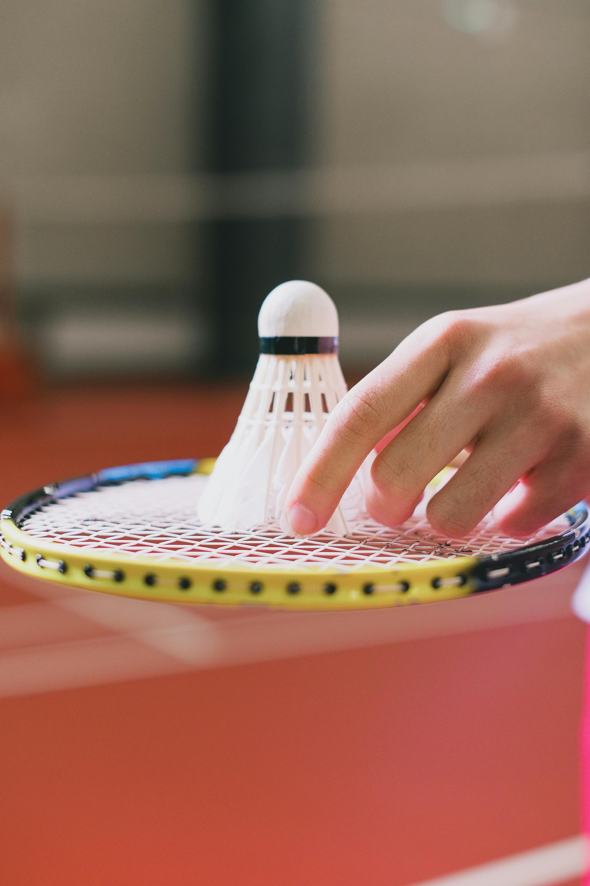
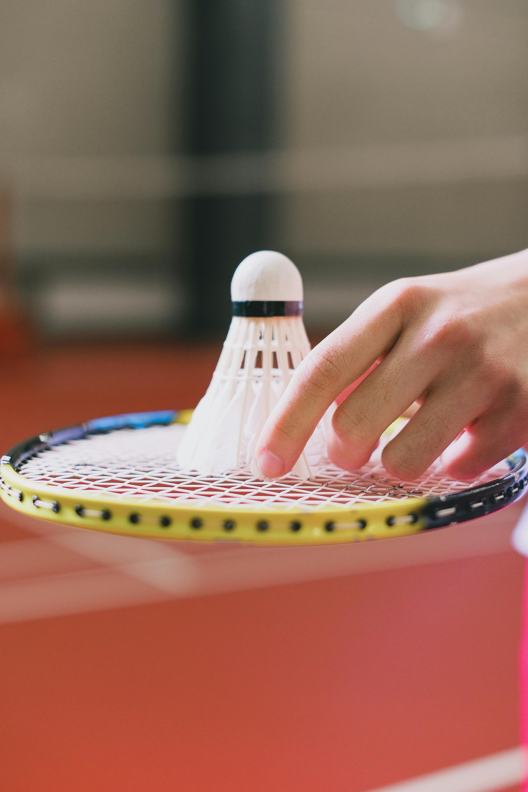

My Art Journey
Art has always been a part of me. From sketching with pencils to creating detailed graphite drawings, I’ve dedicated countless hours to perfecting my craft. I use art as a way to express emotions, tell stories, and preserve memories. Over time, my sketches evolved into a signature style—layered with vulnerability, cinematic tension, and spiritual undertones. I began selling my work, not just as art, but as emotional experiences. Each piece became a conversation starter, a legacy fragment, and a way to connect with others beyond words. Then came the moment that changed everything: being featured on Citizen TV. That spotlight wasn’t just about recognition—it was a celebration of resilience, of starting from zero and daring to dream. It affirmed that art, when rooted in truth and purpose, can reach hearts across screens and borders.
Over the years, I’ve worked with painting, photography, and modern digital techniques, blending creativity with technology.
Who I Am
Beyond art, I am passionate about fitness and sports. I enjoy going to the gym regularly and I also play badminton. These activities keep me energized, disciplined, and creative in my daily life. I’m Ibrahim, a coastal soul with a competitive edge and a deep respect for discipline—on and off the court. Badminton is my rhythm sport: fast-paced, strategic, and deeply meditative. Whether it’s a solo rally or a doubles match, I thrive on precision, agility, and the quiet thrill of outsmarting my opponent with a well-placed drop shot. It’s not just a game— it’s a metaphor for life: stay light, stay sharp, and always return. The gym is my sanctuary for growth and grit. I train not just for strength, but for clarity and consistency. Every rep is a reminder that transformation is earned, not given. I focus on functional fitness, endurance, and mobility—building a body that supports my creative and educational missions. Whether I’m lifting weights or stretching through recovery, I treat movement as a form of self-respect.
 

My Studies
🎓 Academic Highlights – Ibrahim's Tech & Digital Mastery
1. Software Development – PLP Academy
I am currently immersed in a rigorous software development program, where I am mastering both the theoretical and practical foundations of modern coding. This journey reflects my commitment to building scalable, youth-friendly tech solutions.
- Python programming and database design
- Web development workflows and deployment
- Problem-solving through code and real-world applications
2. International Computer Driving License (ICDL)
The ICDL is a globally recognized certification that has expanded my skills in both technology and creativity. Through this program, I explored essential modules that prepare me for leadership in education and entrepreneurship.
- 🛡️ Cybersecurity – Understanding threats, safe practices, and digital hygiene
- 🤖 Artificial Intelligence – Grasping AI concepts and their ethical implications
- 💡 Coding Principles – Learning structured logic, syntax, and algorithmic thinking
- 📈 Digital Marketing – Navigating online branding, analytics, and audience engagement
3. Certificate in ICT
My foundational training in Information and Communication Technology laid the groundwork for my digital literacy and teaching skills. This training supported my growth in productivity and mentorship.
- Computer packages and digital literacy
- Hardware/software basics and troubleshooting
- Productivity tools for teaching and administration
4. Certificate in Business ICT
To complement my ICT background, I pursued a Certificate in Business ICT, which sharpened my understanding of how technology drives modern organizations.
- ICT applications in business environments
- Data management and communication systems
- Tech-driven decision-making and reporting